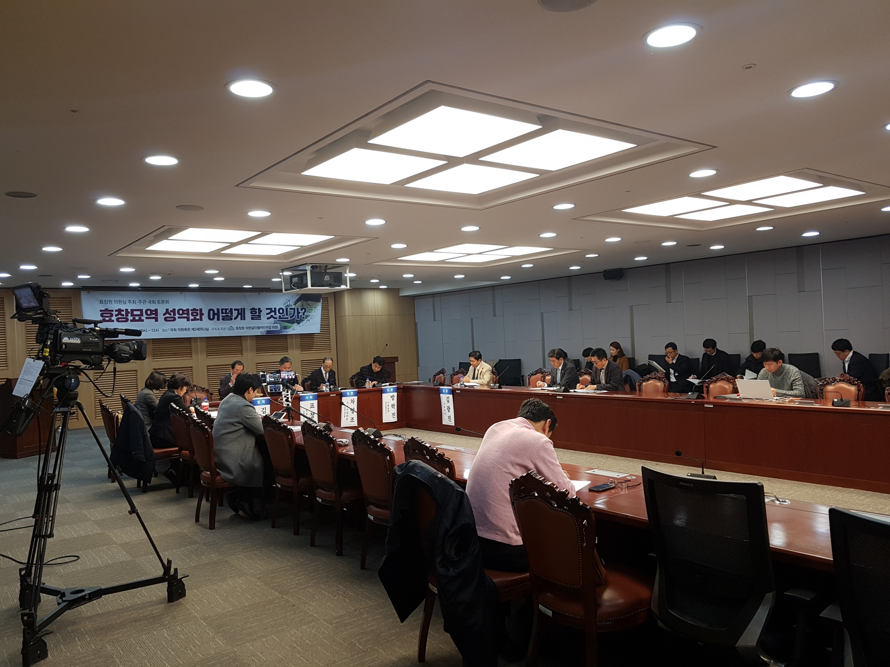

> 11월 27일 국회의원 회관에서 효창묘역 성역화에 대한 토론회가 진행됐다.
지난 8월 국가보훈처는 보훈혁신위원회(이하 혁신위)의 권고를 수용하여 3·1운동 및 임시정부 수립 100주년을 기념한 효창공원의 독립운동기념공원화 사업을 본격적으로 추진하기로 결정하였다. 서울시 용산구에 위치한 효창공원에는 김구 선생을 비롯한 여덟 명의 독립운동가(안중근 의사의 가묘포함)의 묘역이 마련되어 있다. 이는 사적 제330호로 지정되어있으나 효창공원 자체는 용산구 관할의 근린공원으로 운영되고 있다. 이에 대해 혁신위는 “독립유공자의 정신이 깃든 공간이 아닌 한낱 공원으로 방치되고 있다”는 점을 지적했다.
효창공원을 둘러싼 다양한 논의가 진행되고 있는 가운데, ‘효창묘역 성역화 어떻게 할 것인가?’를 주제로 한 토론회가 11월 27일 국회에서 열렸다. 이번 토론회를 주최·주관한 더불어민주당 표창원 의원(52)은 “효창공원에 다양한 시설물들이 들어서면서 애국지사를 제대로 모시지 못하는 후손들의 불손함이 지속되고 있다. 이를 해결하고자 하는 노력들을 완결하고자 주된 관리 기관인 국가보훈처, 서울시, 용산구와 독립유공자단체, 시민들이 함께 뜻을 모으는 자리를 마련했다”며 토론회 개최의 목적을 밝혔다.
발제자로 나선 김삼웅 전 독립기념관장(75)은 효창묘역의 조성 경위를 소개하고, 성역화를 둘러싸고 나타났던 현실적 난관에 대해 밝혔다. 김 전 관장은 “효창공원을 민족독립공원으로서, 프랑스의 판테온이나 오스트리아 빈의 예술가 묘역과 같이 역사와 예술 및 교육의 친근한 문화공간으로 조성하자”는 제안을 덧붙였다.
이어진 패널 토론에서는 먼저 효창공원의 관리실태와 효창운동장을 비롯해 독립유공자 묘역과는 이질적인 성격의 시설이 공원 내에 자리 잡고 있는 상황에 대한 문제가 제기되었다. 차영조 씨(75·효창원7위선열기념사업회장)는 효창묘역에 안장된 임시정부 요인 중 한 명인 차리석 선생의 아들로서 “효창원에 가서 눈물 흘린 적이 많다. 상징적인 독립운동가 분들의 묘소인데 동작구의 국립현충원 같은 곳과 달리 관리가 잘 안 되고 있다”며 아쉬움을 토로했다. 차 씨는 “선열묘역의 정수리에 원효대사 동상과 반공위령탑이 있다. 두 개 모두 군사정권에 의해 선열들의 묘역과 정신이 침범된 사례이다. 사업은 그런 것들이 다 나가는 것으로 시작해야 한다”고 주장했다.
이어서 토론에 나선 홍소연 씨(60·심산김창숙기념관 전시실장)는 “효창원을 김구 선생님이 1946년에 여러 독립 운동가들의 뼈를 묻었을 때의 상태로 복원하라는 말을 어른들로부터 많이 들었다”며 효창운동장 등의 시설의 철거가 필요하다고 말했다.
반면 2015년에 효창공원 국립묘지 승격 추진 법안을 대표 발의했던 김광진 전 의원(37·대통령직속 군사망사고진상규명위원회 사무국장)은 이전의 경험을 들어 효창공원의 범주에 대한 고민을 밝혔다. 그는 “51,800여평의 부지 전체 중에서 체육관 같은 시설들을 쫓아내야 할 것인지, 아니면 시대적 상황으로 이해하고 넘어갈 수 있는 것인지 구분이 필요하다”고 말했다.
설혜영 구의원(40·용산구)은 2013년 용산구 구의회에서 효창공원 국립묘지화 입법추진 반대결의안이 통과된 과정을 언급하며 “당시에 여러 이해관계가 얽혀있었던 만큼 지역주민들의 의견을 잘 수렴해야한다”며 “주민들이 효창공원의 선열들을 느끼는 여러 사업을 진행하고 있는데 이런 것과 결합할 필요가 있다”고 주장했다.
토론회를 주창한 표창원 의원은 “성역화 사업의 범주와 국립묘지인지 역사와 문화 및 교육의 공간으로서의 공원인지 등의 성격에 대해서 주민을 포함한 사회적, 정치적 합의의 과정을 거치는 것이 필수적”이라고 토론자들의 의견을 정리하였다.
한편 해당 사업을 주관하게 될 보훈처 등 기관들의 의지 및 책임에 대한 지적도 나왔다. 민성진 씨(항일독립운동가단체협의회 사무총장)는 “사업에 대해 국가보훈처와 정부, 서울시가 서로 핑퐁만 하고 있는 상태”라고 비판했다. 방학진 씨(52·민족문제연구소 기획실장)는 2005년 노무현 참여정부 당시 사업이 무산되었던 것을 지적하며 “당시 보훈처가 핵심 부서로서 제대로 역할을 못했다. 효창운동장, 대한노인회와 관련해 대한축구협회, 보건복지부 등이 얽혀있는 상황에서 해결을 이끌어낼 범정부기구가 필요하다”고 말했다.
효창공원의 독립운동기념공원화 사업은 현재 시작단계로서 기술용역 등을 통해 세부 계획이 수립되고 있으며, 11월 초부터 서울시와 보훈처가 함께 역할에 대한 협의를 진행 중이다.